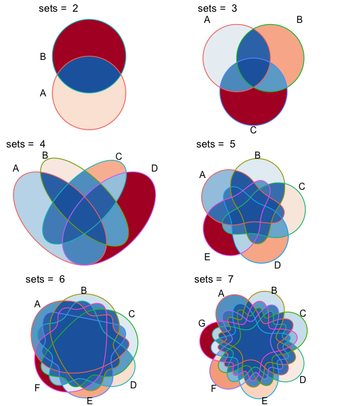

‘ggVennDiagram’ enables fancy Venn plot with 2-7 sets and generates publication quality figure.
Installation
You can install the released version of ggVennDiagram from CRAN with (under evaluation in CRAN):
install.packages("ggVennDiagram")And the development version from GitHub with:
# install.packages("devtools")
devtools::install_github("gaospecial/ggVennDiagram")Citation
If you find ggVennDiagram is useful and used it in academic papers, you may cite this package as:
Gao, C.-H., Yu, G., and Cai, P. (2021). ggVennDiagram: An Intuitive, Easy-to-Use, and Highly Customizable R Package to Generate Venn Diagram. Frontiers in Genetics 12, 1598. doi: 10.3389/fgene.2021.706907.
Example
ggVennDiagram maps the fill color of each region to quantity, allowing us to visually observe the differences between different parts.
library(ggVennDiagram)
genes <- paste("gene",1:1000,sep="")
set.seed(20210419)
x <- list(A=sample(genes,300),
B=sample(genes,525),
C=sample(genes,440),
D=sample(genes,350))ggVennDiagram return a ggplot object, the fill/edge colors can be further modified with ggplot functions.
library(ggplot2)
ggVennDiagram(x) + scale_fill_gradient(low="blue",high = "red")
ggVennDiagram(x) + scale_color_brewer(palette = "Paired")ggVennDiagram now support 2-7 dimension Venn plot. The generated figure is generally ready for publish. The main function ggVennDiagram() will check how many items in the first parameter and call corresponding function automatically.
The parameter category.names is set names. And the parameter label can label how many items are included in each parts.
ggVennDiagram(x,category.names = c("Stage 1","Stage 2","Stage 3", "Stage4"))
ggVennDiagram(x,category.names = c("Stage 1","Stage 2","Stage 3", "Stage4"), label = "none")
Set label_alpha = 0 to remove label background
ggVennDiagram(x, label_alpha=0)
Showing intersection values
Note: you need to install the GitHub version to enable these functions.
We implemented the process_region_data() to get intersection values.
y <- list(
A = sample(letters, 8),
B = sample(letters, 8),
C = sample(letters, 8),
D = sample(letters, 8)
)
process_region_data(Venn(y))
#> # A tibble: 15 × 5
#> component id item count name
#> <chr> <chr> <list> <int> <chr>
#> 1 region 1 <chr [1]> 1 A
#> 2 region 2 <chr [1]> 1 B
#> 3 region 3 <chr [3]> 3 C
#> 4 region 4 <chr [5]> 5 D
#> 5 region 12 <chr [3]> 3 A..B
#> 6 region 13 <chr [2]> 2 A..C
#> 7 region 14 <chr [0]> 0 A..D
#> 8 region 23 <chr [0]> 0 B..C
#> 9 region 24 <chr [0]> 0 B..D
#> 10 region 34 <chr [0]> 0 C..D
#> 11 region 123 <chr [1]> 1 A..B..C
#> 12 region 124 <chr [1]> 1 A..B..D
#> 13 region 134 <chr [0]> 0 A..C..D
#> 14 region 234 <chr [2]> 2 B..C..D
#> 15 region 1234 <chr [0]> 0 A..B..C..DIf only several items were included, intersections may also be viewed interactively by plotly method (if you have two many items, this is useless).
ggVennDiagram(y, show_intersect = TRUE)In web browser or RStudio, you will get:

Customizing your plot
There are three components in a Venn plot: 1) the set labels; 2) the edge of sets; and 3) the filling regions of each parts. We separately stored these data in a structured S4 class VennPlotData object, in which labels, edges and regions are stored as simple features.
Simple features or simple feature access refers to a formal standard (ISO 19125-1:2004) that describes how objects in the real world can be represented in computers, with emphasis on the spatial geometry of these objects. But here we employed this to describe the coordinates of Venn components.
In general, ggVennDiagram() plot a Venn in three steps:
- get the coordinates of a applicable shape from internal
shapesdatasets. - calculate sub regions of sets, including both the shape regions and sets members, and return a
PlotDataVennobject that includes all necessary definitions. We implement a number of set operations functions to do this job. - plot using
ggplot2functions.
venn <- Venn(x)
data <- process_data(venn)
data
#> An object of class "VennPlotData"
#> Slot "setEdge":
#> Simple feature collection with 4 features and 5 fields
#> Geometry type: LINESTRING
#> Dimension: XY
#> Bounding box: xmin: 0.0649949 ymin: 0.1849949 xmax: 0.9350051 ymax: 0.8391534
#> CRS: NA
#> # A tibble: 4 × 6
#> id geometry compo…¹ item count name
#> <chr> <LINESTRING> <chr> <nam> <int> <chr>
#> 1 1 (0.1025126 0.7174874, 0.09412107 0.7081191, 0… setEdge <chr> 300 A
#> 2 2 (0.2525126 0.8174874, 0.246341 0.8103391, 0.2… setEdge <chr> 525 B
#> 3 3 (0.7333452 0.8033452, 0.7262248 0.8095447, 0.… setEdge <chr> 440 C
#> 4 4 (0.8974874 0.7174874, 0.8881191 0.7258789, 0.… setEdge <chr> 350 D
#> # … with abbreviated variable name ¹component
#>
#> Slot "setLabel":
#> Simple feature collection with 4 features and 3 fields
#> Geometry type: POINT
#> Dimension: XY
#> Bounding box: xmin: 0.08 ymin: 0.78 xmax: 0.93 ymax: 0.86
#> CRS: NA
#> # A tibble: 4 × 4
#> id geometry component name
#> <chr> <POINT> <chr> <chr>
#> 1 1 (0.08 0.78) setLabel A
#> 2 2 (0.26 0.86) setLabel B
#> 3 3 (0.71 0.85) setLabel C
#> 4 4 (0.93 0.78) setLabel D
#>
#> Slot "region":
#> Simple feature collection with 15 features and 5 fields
#> Geometry type: POLYGON
#> Dimension: XY
#> Bounding box: xmin: 0.0649949 ymin: 0.1849949 xmax: 0.9350051 ymax: 0.8391534
#> CRS: NA
#> # A tibble: 15 × 6
#> id geometry compo…¹ item count name
#> <chr> <POLYGON> <chr> <lis> <int> <chr>
#> 1 1 ((0.1025126 0.7174874, 0.1118809 0.7258789, … region <chr> 41 A
#> 2 2 ((0.2525126 0.8174874, 0.2596609 0.823659, 0… region <chr> 151 B
#> 3 3 ((0.7333452 0.8033452, 0.7395447 0.7962248, … region <chr> 91 C
#> 4 4 ((0.8974874 0.7174874, 0.9058789 0.7081191, … region <chr> 75 D
#> 5 12 ((0.2494531 0.7508377, 0.266399 0.7472201, 0… region <chr> 49 A..B
#> 6 13 ((0.3598131 0.3161471, 0.3466157 0.3144203, … region <chr> 51 A..C
#> 7 14 ((0.6341476 0.306281, 0.6321686 0.2919527, 0… region <chr> 36 A..D
#> 8 23 ((0.4087951 0.6905086, 0.4240163 0.7044756, … region <chr> 111 B..C
#> 9 24 ((0.7013464 0.5605964, 0.7121743 0.5437184, … region <chr> 63 B..D
#> 10 34 ((0.7562978 0.7359764, 0.7555797 0.7233843, … region <chr> 53 C..D
#> 11 123 ((0.4254307 0.668526, 0.4425419 0.6552909, 0… region <chr> 49 A..B…
#> 12 124 ((0.6020164 0.4567956, 0.6098817 0.4389429, … region <chr> 38 A..B…
#> 13 134 ((0.4966178 0.374675, 0.4805314 0.3646387, 0… region <chr> 21 A..C…
#> 14 234 ((0.5085786 0.6114214, 0.5243976 0.6266822, … region <chr> 49 B..C…
#> 15 1234 ((0.5066822 0.5956024, 0.5213246 0.5792878, … region <chr> 15 A..B…
#> # … with abbreviated variable name ¹componentNow we can custom this figure.
ggplot() +
geom_sf(aes(fill=count), data = venn_region(data)) +
geom_sf(size = 2, lty = "dashed", color = "grey", data = venn_setedge(data), show.legend = F) +
geom_sf_text(aes(label = name), data = venn_setlabel(data)) +
geom_sf_label(aes(label=id), fontface = "bold", data = venn_region(data)) +
theme_void()
Venn Diagram for more than four sets
If you have reviewed my codes, you may find it is easy to support Venn Diagram for more than four sets, as soon as you find a ideal parameter to generate more circles or ellipses in the plot. The key point is to let the generated ellipses have exactly one intersection for each combination.
From v1.0, ggVennDiagram can plot up to seven dimension Venn plot. We would like to acknowledgment the author of package venn, for his kind help on sharing the required shape coordinates for this feature.
However, Venn Diagram for more than four sets may be meaningless in some conditions, as some parts may be omitted in such ellipses. Therefore, it is only useful in specific conditions. For example, if the set intersection of all group are extremely large, you may use several ellipses to draw a “flower” to show that.
x <- list(A=sample(genes,300),
B=sample(genes,525),
C=sample(genes,440),
D=sample(genes,350),
E=sample(genes,200),
F=sample(genes,150),
G=sample(genes,100))
# seven dimension Venn plot
ggVennDiagram(x)
# six dimension Venn plot
ggVennDiagram(x[1:6])
# five dimension Venn plot
ggVennDiagram(x[1:5])
# four dimension Venn plot
ggVennDiagram(x[1:4])
# three dimension Venn plot
ggVennDiagram(x[1:3])
# two dimension Venn plot
ggVennDiagram(x[1:2])
Futher information
Venn Diagram cookbook in R
I have released a online book to introduce the development of ggVennDiagram, it contains a chapter that compare many different R packages in plotting a Venn. Refer to Venn Diagram cookbook in R.